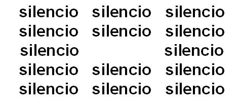

Palabras en Vuelo: Poesía Concreta
Silencio

Clemente Padín
El poema "Silencio" de Clemente Padín es un ejemplo de poesía concreta, un estilo poético en el que se utiliza la disposición visual y espacial de las palabras en la página para comunicar significados y emociones. No tengo acceso a información detallada sobre la situación del autor mientras escribía este poema específico.
Clemente Padín es un poeta y artista visual uruguayo conocido por su participación en el movimiento de poesía experimental y su activismo político.
La poesía concreta se caracteriza por su enfoque en la forma visual del poema y cómo las palabras se organizan en el espacio. En este estilo poético, la estructura y el diseño son tan importantes como las mismas palabras para transmitir el significado del poema.